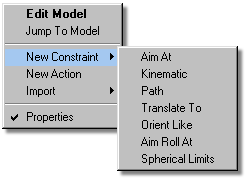
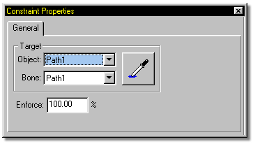

People and animals exhibit an incredible amount of coordination and timing, so
much so that computers have not yet duplicated the elegance and perfection of
human motion. You as an animator must use your skills to duplicate such
natural complexities. To help you in your task, many tools, called “constraints”,
are available to help you mimic natural motion. Constraints are a mechanism for
controlling a bones position or orientation at a given time. They are all stored
in an Action (called Choreography) and applied to a bone in the same manner as
a channel.
People and animals exhibit an incredible amount of coordination and timing, so
much so that computers have not yet duplicated the elegance and perfection of
human motion. You as an animator must use your skills to duplicate such
natural complexities. To help you in your task, many tools, called “constraints”,
are available to help you mimic natural motion. Constraints are a mechanism for
controlling a bones position or orientation at a given time. They are all stored
in an Action (called Choreography) and applied to a bone in the same manner as
a channel.
There are seven different types of constraints available to you in MH3D. To add a constraint to a selected object, right click on the object in the Choreography window, or right click the object name in the Project Workspace. A popup menu will appear with a New Constraint option on it. Selecting this option will open another popup containing a selection of the seven different types of constraints.

Selecting one of these constraint types will turn the cursor into a picker tool which you can use to select the target object. Constraints can also be entered manually on the Properties Panel.

Constraints may seem hard at first because they are unfamiliar, but what’s really hard is trying to animate without them. They remove much of the technicalities, leaving you time to learn the mechanics. Constraints are so-named because their intention is to constrain movement.
Tell Me About:
"Aim At" Constraints
"Kinematic" Constraints
"Path" Constraints
"Translate To" Constraints
"Orient Like" Constraints
"Aim Roll At" Constraints
"Spherical Limits" Constraints
Blending Constraints
Constraint Order
Animating Constraints
Targets
Circular Constraints